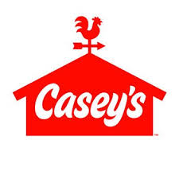
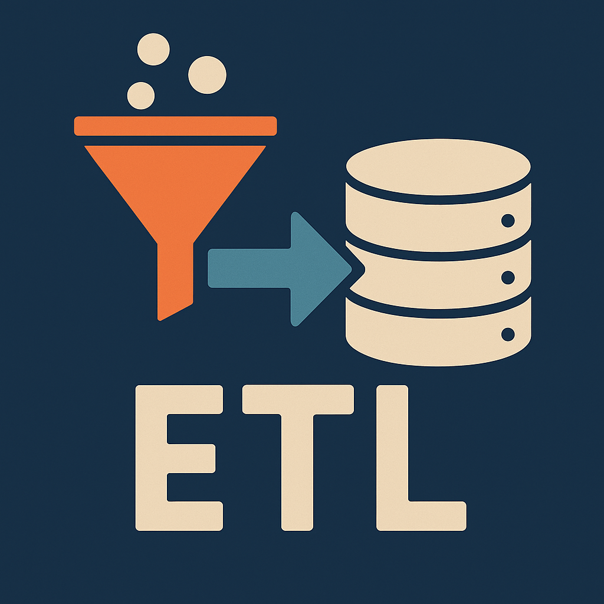

Welcome to my Projects Page:
This is where you can find all of my University projects.
A couple of my recent projects:
These are a few of my recent projects to showcase my skills and what I can apply to my professional career.
-

Casey's Darn Good Coffee Advertising Project
As part of a senior capstone course at the University of Iowa, I worked on a cross-functional analytics project in partnership with Casey’s, focusing on their new product launch: Casey’s Darn Good Coffee. Our team segmented the project into key focus areas—Financial Performance, Customer Attachment, and Coffee Basket Analysis. We designed and deployed a relational SQL database using Oracle APEX to manage over 2 million records across 7 integrated tables. I contributed to data modeling, querying, and dashboard development to derive insights and track performance metrics. Our findings were presented in weekly agile sprint meetings with Casey’s stakeholders, where we shared data-driven recommendations and tracked KPIs tied to the coffee launch. We concluded the project by delivering a final presentation to Casey’s senior analytics board, highlighting actionable strategies to enhance customer engagement and revenue. The experience wrapped up with a networking lunch hosted by Casey’s analytics team.
-

Microsoft Grade ETL Data Pipeline
For my Data Engineering final project, I built a complete ETL pipeline using Microsoft’s data ecosystem to analyze and visualize parking patterns at the University of Iowa. I began by architecting a cloud-based solution in Azure, deploying a SQL Server and creating the necessary Azure Storage infrastructure. Using Azure Data Factory (ADF), I designed and implemented a dataflow to clean and transform raw parking data into a structured format suitable for analysis. The processed data was then loaded back into Azure SQL for integration. From there, I connected the cleaned dataset to Power BI, where I built an interactive dashboard. The dashboard allowed users to filter by year, parking lot, and AM/PM timeframes, enabling detailed comparison of usage trends and average stay durations. My final presentation highlighted operational insights and potential improvements for parking resource allocation.
You can find this report here: View Final Report (PDF)
-

Pyspark Machine Learning Internet Serivce Provider Customer Churn Predictions
In my Advanced Database Management course, I led a project focused on identifying customer churn patterns within an internet service provider dataset. We extracted the raw data, transformed it into a structured format, and loaded it into our custom SQL database environment. Using PySpark, we cleaned and prepared the dataset for advanced analysis. We then implemented multiple machine learning models—including logistic regression, random forest, and K-means clustering—to uncover service features most correlated with customer churn and identify at-risk customer segments. The project culminated in a presentation where we shared our findings, highlighted key churn drivers, and proposed strategic improvements to reduce customer attrition based on our model outputs.
You can find this report here: View Final Report (PDF)